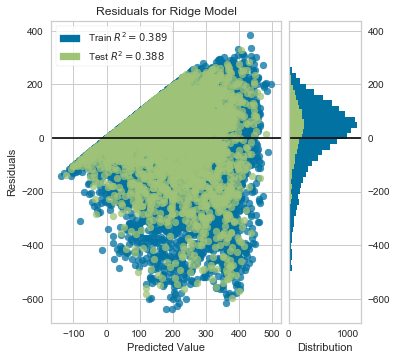
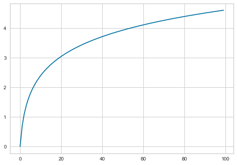
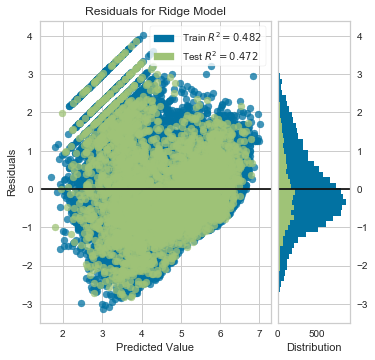
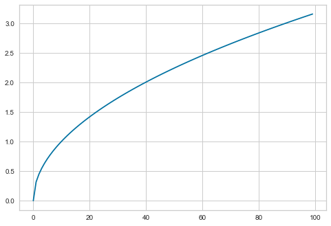
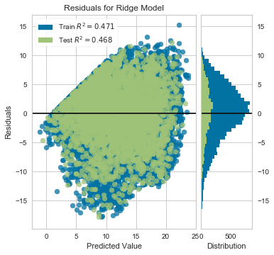

Evaluation using Residual Plots
Goal
One of the key assumptions of any linear model is homoscedasticity, which– apart from being a $2 word that I need to spellcheck every time– means that the variance of your error terms stays generally-consistent across all fitted values.
Thus, it becomes essential to collect your error residuals and examine them against your predicted values. And if you’re being really diligent, your independent X variables, as well.
Visually, this basically means that we want to see the former, not the latter, of the two pictures below.
%pylab inline
from IPython.display import Image
Image('images/scedasticity.jpg')Populating the interactive namespace from numpy and matplotlib

Note: The “funnel shape” of the dataset showing Heteroscedasticity
A Practical Example
In researching the easiest way to put these plots together in Python, I stumbled upon the Yellowbrick library. It provides, among other things, a nice visualization wrapper around sklearn objects for doing visual, statistical inference.
Borrowing from their docs, we’ll load one of their sample datasets, fit a simple model, then show its residual plot.
from sklearn.model_selection import train_test_split
from sklearn.linear_model import Ridge
from yellowbrick.datasets import load_bikeshare
from yellowbrick.regressor import ResidualsPlot
X, y = load_bikeshare()
X_train, X_test, y_train, y_test = train_test_split(X, y, test_size=0.2, random_state=42)
model = Ridge()
visualizer = ResidualsPlot(model, size=(400, 400))
visualizer.fit(X_train, y_train)
visualizer.score(X_test, y_test)
visualizer.poof();
As you can see, there’s a very clear “funnel shape” that demonstrates *hetero*scedasticity in our data. Furthermore, we can tell by looking at the histogram to the right that the residual values aren’t even centered around 0.
To address this, the authors of of ISL advocate for applying some concave (downward-curved) function to our target variable, y, to shrink the error in the larger responses.
Scaling
The log function is a typical candidate for a transformation function, as it has the concave shape we’re looking for
X = np.log(np.linspace(1, 100, 100))
plt.plot(X);
Same code block as above, except we run all of the y values through np.log()
X, y = load_bikeshare()
scaled_y = np.log(y)
X_train, X_test, y_train, y_test = train_test_split(X, scaled_y, test_size=0.2, random_state=42)
model = Ridge()
visualizer = ResidualsPlot(model, size=(400, 400))
visualizer.fit(X_train, y_train)
visualizer.score(X_test, y_test)
visualizer.poof();
However, it appears that not only did we overshoot wrenching the mean residual value down, we also created what looks to be a “reverse-funnel” after ~4 on the X-axis.
What about the square root function?
X = np.sqrt(np.linspace(0, 10, 100))
plt.plot(X);
X, y = load_bikeshare()
scaled_y = np.sqrt(y)
X_train, X_test, y_train, y_test = train_test_split(X, scaled_y, test_size=0.2, random_state=42)
model = Ridge()
visualizer = ResidualsPlot(model, size=(400, 400))
visualizer.fit(X_train, y_train)
visualizer.score(X_test, y_test)
visualizer.poof();
Better, but we still have a distrinct pickup before 10 or so. We could also examine the residuals against each of our features, but it’s probably worth trying a non-linear model at this point, as it might be better-suited for this problem